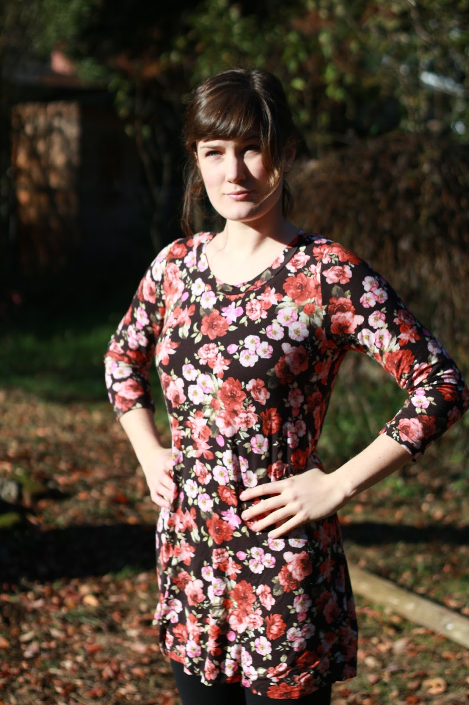
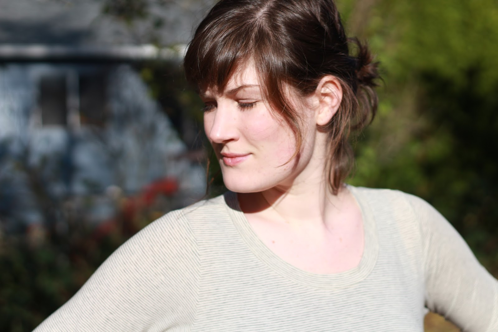

Oh, hello! Fancy meeting you here! Did you forget that I had a sewing blog? Me, too! The blog has fallen by the wayside, but I have been sewing some, thank goodness. This summer involved a LOT less sewing than anticipated for a number of reasons. To start with, my sewing room turned from a somewhat-cramped but cozy room of tolerable temperature into a STEAMING HOT GREENHOUSE that was slowly filled with moving boxes and an entire sectional sofa, in preparation for our move. Then we moved! I finally have my sewing room a little more organized, but then nursing school really cramped my style and any time I had was spent sewing, not blogging. But on Thanksgiving we had some really nice weather and a few minutes of free time, so I begged Ricky to take some photos of my recent makes. We got through this many before my sister arrived to pick us up for Thanksgiving dinner! Let's get started! This is the new Love Notions pattern, and my first from the company, the Laundry Day Tee. This pattern was available for free to members of the Love Notions Facebook Group, so guess who promptly joined the Love Notions Facebook Group!? Yeah, duh! It was an overnight sensation on that Facebook group, let me tell you. People fell in love! So I tried it-- I've made three so far
Fitted in the bust and arms, it fits loosely over the waist and hips. Ladies love that shit. This rosy floral print is from Girl Charlee. It's super soft and drapey. The pattern calls for rayon, and this fabric supposedly is just a cotton lycra blend but it sure feels smooth like rayon!
I was mid-gesture here-- who knows.
Super comfy! Nice with fitted pants and a cardigan!
Here is Laundry Day Tee numero dos! I got this very subtle, heathered striped fabric at Mill End a couple weeks ago. I love stripes but I dislike bright, bright white in my stripes because it creates a really stark, migraine-inducing stripe pattern for me. So I really liked this mellow color combo.
The downside was that, in the blinding Thanksgiving day sun, the color almost blends in with my pasty skin. So this photo opp turned into a scarf photo shoot! This is my VERY beloved
I knit it "straight" from the pattern (with the exceptions of my many mistakes), including the yarn choice. This color goes with EVERYTHING. I would never have guessed. I love it with blue, black, burgundy, green, gray... seriously, it goes with my whole wardrobe.
Twirling with my beloved scarf.
I am knitting a second one! It's kind of a taupe color. Also, I made this super soft french terry raglan sweatshirt and had enough left over for a Lucca-sized garment. So naturally, I made her a matching raglan sweatshirt!